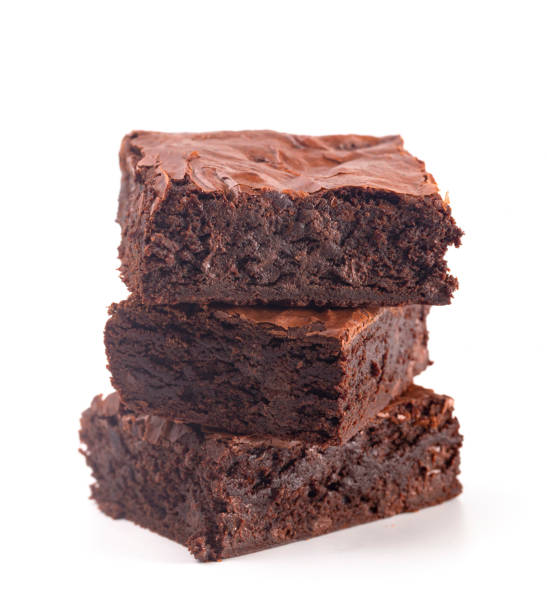

Fudge Brownie

Description
A chewy, fudgy, brownie that is easy to make. This is great because it uses things that you may already have on hand.
Ingredients
- ¾ cup unsweetened cocoa powder
- ½ teaspoon baking soda
- ⅓ cup vegetable oil
- ½ cup boiling water
- 2 cups white sugar
- 2 eggs
- ⅓ cup vegetable oil
- 1⅓ cups all-purpose flour
- 1 teaspoon vanilla extract
- ¼ teaspoon salt
Steps
- Preheat oven to 350 degrees F (175 degrees C). Grease and flour a 9x13 inch pan.
- In a large bowl, stir together the cocoa and baking soda. Add 1/3 cup vegetable oil and boiling water. Mix until well blended and thickened. Stir in the sugar, eggs, and remaining 1/3 cup oil. Finally, add the flour, vanilla and salt; mix just until all of the flour is absorbed. Spread evenly into the prepared pan.
- Bake in the preheated oven for 35 to 40 minutes, or until a toothpick inserted into the cake comes out clean. Allow to cool before cutting into squares.
Nutrition Facts
Per Serving:156 calories; protein 1.8g; carbohydrates 23.5g; fat 7g; cholesterol 15.5mg; sodium 57mg.